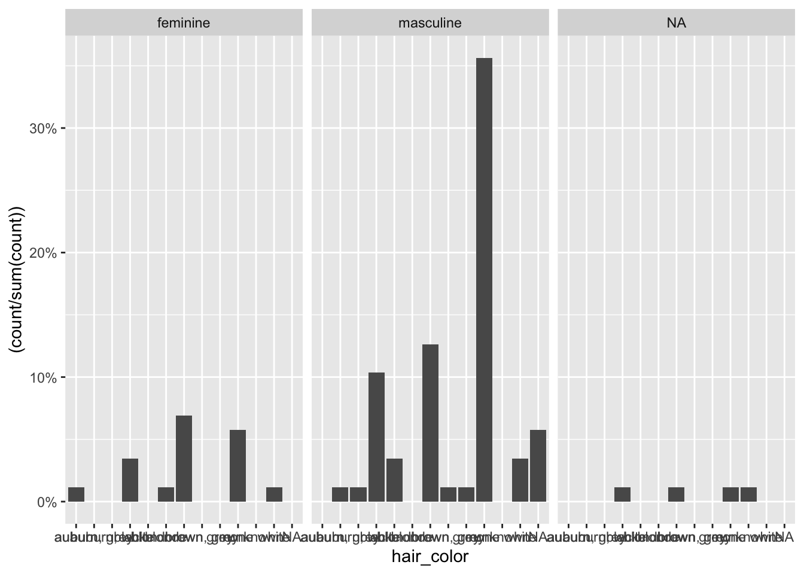
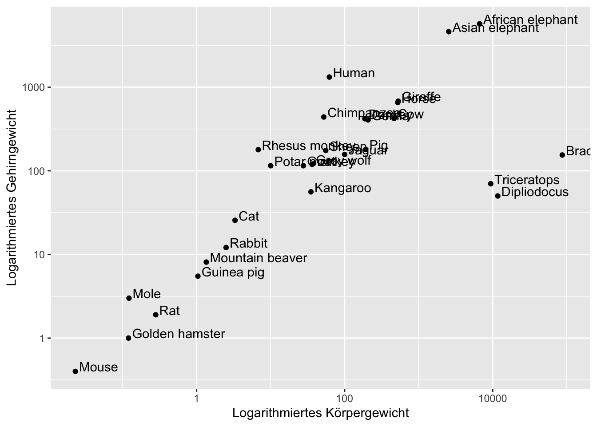

4 ggplot
Vorteil ggplot: nicht vordefinierte Grafiken, sondern Zusammensetzung vieler Layers
4.1 Arten von Plots
library(tidyverse)
starwars <- starwars
head(starwars)## # A tibble: 6 × 16
## name height mass hair_color skin_color eye_color
## <chr> <int> <dbl> <chr> <chr> <chr>
## 1 Luke Sky… 172 77 blond fair blue
## 2 C-3PO 167 75 <NA> gold yellow
## 3 R2-D2 96 32 <NA> white, bl… red
## 4 Darth Va… 202 136 none white yellow
## 5 Leia Org… 150 49 brown light brown
## 6 Owen Lars 178 120 brown, gr… light blue
## # … with 10 more variables: birth_year <dbl>,
## # sex <chr>, gender <chr>, homeworld <chr>,
## # species <chr>, films <list>, vehicles <list>,
## # starships <list>, star_string <chr>,
## # films_low <chr>4.1.1 Punktdiagramm
ggplot(data =starwars, aes(x= height, y = mass, color = species)) + #aes = achsen / aestethics: welche achesn werden dargestellt
geom_point() + #art des graphs
facet_wrap(~gender) #facettierung = unterteilung des Plots## Warning: Removed 28 rows containing missing values
## (geom_point).
4.1.2 Säulen:
starwars %>%
ggplot( aes(x = hair_color, group = gender)) + #normal einfach nur das x auswählen
geom_bar(aes(y = (..count../sum(..count..)))) + #hier special: die y-achse wir definiert als
scale_y_continuous(labels = scales::percent) + #die y skala kriegt einen namen
facet_wrap(~gender) #und es wird nach verschiedenen gruppen aufgeteilt
4.1.3 Histogramm
#mit binwidth
starwars %>%
filter(!is.na(height)) %>%
ggplot(aes(height)) +
geom_histogram(binwidth = 25)#relative verteilung
starwars %>%
filter(!is.na(height)) %>%
ggplot(aes(height)) +
geom_histogram(aes(y = ..density..)) + #mit relativer Dichte:
geom_density() + #verteilungslinie darüber
xlab("Größe in cm") #label für die x achse## `stat_bin()` using `bins = 30`. Pick better value
## with `binwidth`.4.1.4 Boxplot
starwars %>%
filter (mass != max(mass, na.rm = T), !is.na(gender)) %>% #größten Wert Jabba Hut rausfiltern
ggplot( aes(y = mass, x = gender)) +
geom_boxplot()# mit arithm. Mittel als Punkt
starwars %>%
filter (mass != max(mass, na.rm = T), !is.na(gender)) %>% #größten Wert Jabba Hut rausfiltern
ggplot( aes(y = mass, x = gender)) +
geom_boxplot() +
geom_point(stat = "summary", fun = "mean", colour = "blue", na.rm = T)4.1.5 Violin
starwars %>%
filter (mass != max(mass, na.rm = T), !is.na(gender)) %>% #größten Wert Jabba Hut rausfiltern
ggplot(aes(y = mass, x = gender)) +
geom_violin()## Aufgaben
library(tidyverse)
library(MASS)
library(datasets)
library(timetk)
library(lubridate)
library(robustbase)
library(usmap)
library(GGally)
library(ggpubr)
library(directlabels)
library(nlme)4.1.6 1a)
deaths <- USAccDeaths
deaths <- tk_tbl(deaths)
ggplot(deaths, aes(index, value)) +
geom_line() +
xlab("Time") +
ylab("Accidental Deaths")4.1.7 1b)
Animals %>%
ggplot(aes(body, brain, label = rownames(Animals))) +
geom_point() +
geom_text(hjust = "left", vjust = "bottom", nudge_x = 0.05) + #adjust text position
scale_y_log10() +
scale_x_log10() +
xlab("Logarithmiertes Körpergewicht") +
ylab("Logarithmiertes Gehirngewicht") 
4.1.8 1c)
animals <- Animals
animals$brain <- log(Animals$brain)
animals$body <- log(Animals$body)
animals %>%
ggplot(aes(body,brain, label= rownames(Animals))) +
geom_point() +
geom_smooth(method = "lmrob", color = "red") +
geom_smooth(method = "lm") +
geom_text(hjust = "left", vjust = "bottom", nudge_x = 0.05) + #adjust text position
xlab("Logarithmiertes Körpergewicht") +
ylab("Logarithmiertes Gehirngewicht") ## `geom_smooth()` using formula 'y ~ x'
## `geom_smooth()` using formula 'y ~ x'4.1.9 1d)
mpg %>%
ggplot(aes(displ, hwy, color = class, label= class)) +
geom_point() +
geom_smooth(mapping = aes(displ, hwy), method = "lm", inherit.aes = F) +
geom_dl( method = "smart.grid") # positiionign smartly in middle of points with method smart.grid## `geom_smooth()` using formula 'y ~ x'4.1.10 1e)
boys <- Oxboys
boys %>%
ggplot(aes( age,height, group = Subject)) +
geom_line() +
geom_smooth(method = "lm", se = F, mapping = aes(age,height), inherit.aes = F)## `geom_smooth()` using formula 'y ~ x'# with custom mapping to take all 4.1.11 1f)
deaths <- USAccDeaths
deaths <- tk_tbl(deaths)
deaths$year <- factor(year(deaths$index))
deaths$month <- factor(month(deaths$index))
deaths$month <- fct_recode(deaths$month,
"Jan" = "1", "Feb" = "2", "Mar" = "3", "Apr"= "4","Mai" = "5", "Jun"= "6",
"Jul"="7","Aug" = "8", "Sep"="9", "Oct"="10", "Nov"="11", "Dez"="12"
)
deaths %>%
ggplot(aes(month, value, group = year, color = year)) +
geom_line()4.1.12 1g)
eco <- economics
presidential <- subset(presidential, start > economics$date[1])
eco %>%
ggplot()+
#alle farbsachen der präsidenten
geom_rect(aes(xmin = start, xmax = end, fill = party), ymin = -Inf, ymax = Inf, alpha = 0.5, data = presidential) +
geom_vline(aes(xintercept = as.numeric(start)), data = presidential, colour = "grey50", alpha = 0.3) +
geom_text(aes(x = start, y = 2500, label = name), data = presidential, size = 3, vjust = 0, hjust = 0, nudge_x = 50)+
scale_fill_manual(values=c("blue", "red")) + #farbwechsel
geom_line(aes(date,unemploy)) + #die linie
xlab("Year") +
ylab("Number of unemployed in thousand")4.2 aufgabe 2
4.2.1 2a)
mtcars %>%
ggplot(aes(cyl)) +
geom_histogram(aes(y=..density..),binwidth = 2,) +
facet_wrap(~am)
4.2.2 2f)
usa <- tibble(USArrests) %>%
mutate(state = rownames(USArrests))
plot_usmap(data = usa, regions = "state", values = "Murder", color = "red") +
scale_fill_continuous(name = "Murder", )